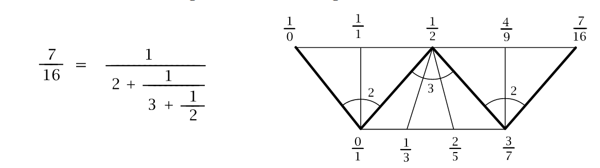

kmett/fractions: how to compute pi to 1000 placesAt the end of this post, we'll know how to compute pi to a thousand places:
*Reference> eshow pi 1000
"0.3141592653589793238462643383279502884197169399375
1058209749445923078164062862089986280348253421170679
8214808651328230664709384460955058223172535940812848
1117450284102701938521105559644622948954930381964428
8109756659334461284756482337867831652712019091456485
6692346034861045432664821339360726024914127e1"which is indeed correct, on comparison with math.com's pi digits list. Let's understand what eshow is, and what pi is. Let's begin!
We begin with the usual incantations:
-- Haskell implementation of exact real arithmetic using
-- Linear Fractional Transformations.
-- Original version by Peter Potts, circa 1998.
-- Updated by Edward Kmett to Haskell 98 in 2015
module Reference where
import Data.Char
import Data.RatioNow we take a peek at eshow:
---------------------------
-- Decimal Output Function
---------------------------
eshow :: Expression -> Integer -> [Char]
eshow e i = mshow (stom (sem e) i)
mshow :: Matrix -> [Char]
mshow m
| d==0 && q==1 = show p
| d==0 && q/=1 = show p ++ "/" ++ show q
| d/=0 = sshow (scientific m 0)
where
d = determinant m
(p,q)
| b < 0 = (-a,-b)
| otherwise = (a,b)
(a,b) = vscale (fst m)Right, we have no idea what stom, sem is, or why we suddenly have matrices involved! So here's the high level idea:
pi is an irrational number.pi has a continued fraction expansion.pi, crunch the value of its continued fraction expansion to as many digits as we need till we know that we have those many correct digits.p/q as a vector [p q] and transformations of fractions as matrix multiplications.The beautiful diagram above is known as a Farey diagram.
The vertices of the triangles in the Farey diagram are labeled with fractions a/b, including the fraction 1/0 [at the left] for infinity. We begin by first labelling the vertices of the big triangle 1/0 , 0/1, and 1/1. Then one inserts labels for successively smaller triangles by the rule that, if the labels at the two ends of the long edge of a triangle are a/b and c/d , then the label on the third vertex of the triangle is (a+c)/(b+d).
This fraction (a+c)/(b+d) is called the mediant of a/b and c/d.
A reasonable question at this point is: "Why fractions?"
Consider the number 7/16. We can write it as a "continued fraction":
\[ \begin{align*} &\frac{7}{16} = 0 + \frac{1}{2 + \frac{1}{3 + \frac{1}{2}}} \\ &\frac{7}{16} \text{ is denoted as } [2, 3, 2] \\ &\text{convergent } 1 = \frac{1}{2} \\ &\text{convergent } 2 = \frac{1}{2 + \frac{1}{3}} = \frac{1}{\frac{7}{3}} = \frac{3}{7} \\ &\text{convergent } 3 = \frac{1}{2 + \frac{1}{3 + \frac{1}{2}}} = \frac{1}{2 + \frac{1}{7}{2}} = \frac{1}{2 + \frac{2}{7}} = \frac{1}{\frac{16}{7}} = \frac{7}{16} \end{align*} \]
We have our convergents \(1/2\), \(3/7\), \(7/16\), the sequence of numbers \([2, 3, 2]\) which are two representations of the continued fraction expansion. We combine the these into very suggestive notation below as a fan of triangles, along with \(1/0\) and \(0/1\) which we have pulled out of thin air.
The above notation is called as Farey strip. We will come to see that it has very nice properties. Let us take two adjacent numbers in the Farey strip, \(1/2\) and \(3/7\). The number that is towrads the right, \(3/7\), has an arc of \(2\) labeled above it. Now, the next number \((7/16)\) is calculated using a rule: \(1/2 \oplus_2 3/7 = (1 + 2 \cdot 3)/(2 + 2 \cdot 7) = 7/16\). More abstractly, given any two fractions \(a/b\), \(c/d\), and a number \(n\), we build the fraction \(a/b\oplus_n c/d = (a+n \cdot c)/(b+ n \cdot d)\).
We can check that the entre farey strip is self-consistent with respect to this operation of \(\oplus\):
2, 3, 2 on the arcs are the same numbers that show up on the continued fraction expansion.1/2, 3/7, 7/16 according to this notation?It turns out that all real numbers posess such expressions in terms of continued fractions. For example, the continued fraction for sqrt(2) is:
\[ \sqrt 2 = 1 + \frac{1}{1 + \frac{1}{1 + \frac{1}{1 + \dots}}} \]
We can truncate the infinite continued fraction as:
\[ \begin{align*} &\text{convergent } 0 = 1.\dots \\ &\text{convergent } 1 = 1 + \frac{1}{1} = 2.\dots \\ &\text{convergent } 2 = 1 + \frac{1}{1 + \frac{1}{1}} = 1 + 1/2 = 3/2 = 1.500000\dots \\ &\text{convergent } 3 = 1 + \frac{1}{1 + \frac{1}{1 + \frac{1}{1}}} = 1 + \frac{1}{1 + \frac{1}{1 + 1/2}} = 1 + \frac{1}{1 + 3/2} = 1 + \frac{1}{5/2} = 1 + \frac{2}{5} = 7/5 = 1.40000000\dots \end{align*} \]
Now that we have the hang of computing these, let's look at a table of their values:
\[ \begin{align*} \sqrt 2 &= 1.41421356\dots \\ 1/1 &= 1.00000000\dots \\ 3/2 &= \mathbf{1.}5000000\dots \\ 7/5 &= \mathbf{1.}4000000\dots \\ 17/12 &= \mathbf{1.4}166666\dots \\ 41/29 &= \mathbf{1.41}37931\dots \\ 99/70 &= \mathbf{1.41}42857\dots \\ 239/169 &= \mathbf{1.4142}011\dots \\ 577/408 &= \mathbf{1.4142}156\dots \\ \end{align*} \]
There's a striking property: once an initial string of digits occurs twice in succession, then this string is unchanged forever after. This is because for any two successive convergents, all subsequent convergents lie between these two since the convergents occur along a zigzag path in the Farey diagram.
First, we define a vector as two integers, a matrix as two vectors, a tensor as two matrices.
type Vector = (Integer, Integer)
type Matrix = (Vector,Vector)
type Tensor = (Matrix,Matrix)A Uuefp and Usefp stand for uncompressed unsigned/signed EFP
type Uuefp = [Integer]
type Usefp = (String,Uuefp)Next, we define Lft, which stands for TODO
data Lft = LftV Vector | LftM Matrix | LftT Tensor Integer
deriving (Eq, Show)Then we define an Expression type which carries a vector, a matrix to be used on an expression, a tensor sandwhiched between two expressions.
data Expression = ExpV Vector | ExpM Matrix Expression |
ExpT Tensor Integer Expression Expression
deriving (Eq, Show)We define Sefp and Uefp for signed/unsigned EFP
data Sefp = Spos Uefp | Sinf Uefp | Sneg Uefp | Szer Uefp
deriving (Eq, Show)
data Uefp = Dneg Uefp | Dzer Uefp | Dpos Uefp | Term Vector
deriving (Eq, Show)Expression can be given a Num instance by defining the operators: \[
\begin{align*}
&+ \equiv \left (\begin{bmatrix} 0 & 0 \\ 1 & 0 \end{bmatrix}, \begin{bmatrix} 1 & 0 \\ 0 & 1 \end{bmatrix} \right) \\
&- \equiv \left (\begin{bmatrix} 0 & 0 \\ 1 & 0 \end{bmatrix}, \begin{bmatrix} -1 & 0 \\ 0 & 1 \end{bmatrix} \right) \\
&* \equiv \left (\begin{bmatrix} 1 & 0 \\ 0 & 0 \end{bmatrix}, \begin{bmatrix} 0 & 0 \\ 0 & 1 \end{bmatrix} \right) \\
\end{align*}
\]
instance Num Expression where
(+) = ExpT (((0,0),(1,0)),((1,0),(0,1))) 0
(-) = ExpT (((0,0),(1,0)),((-1,0),(0,1))) 0
(*) = ExpT (((1,0),(0,0)),((0,0),(0,1))) 0
negate = ExpM ((-1,0),(0,1))
fromInteger n = ExpV (n,1)
instance Fractional Expression where
recip = ExpM ((0,1),(1,0))
(/) = ExpT (((0,0),(1,0)),((0,1),(0,0))) 0
fromRational r = ExpV (numerator r,denominator r)
instance Enum Expression where
succ = ExpM ((1,0),(1,1))
pred = ExpM ((1,0),(-1,1))
--------------------------------------------------------------------------------
-- Basic Functions
--------------------------------------------------------------------------------
one :: a -> Integer -> a
one f 1 = f
identity :: Matrix
identity = ((1,0),(0,1))
trans :: ((t1,t2),(t3,t4)) -> ((t1,t3),(t2,t4))
trans ((a,b),(c,d)) = ((a,c),(b,d))
determinant :: Matrix -> Integer
determinant ((a,b),(c,d)) = a * d - b * c
inverse :: Matrix -> Matrix
inverse ((a,b),(c,d)) = mscale ((d,-b),(-c,a))
--------------------------------------------------------------------------------
-- Binary Scaling Functions
--------------------------------------------------------------------------------
vscale :: Vector -> Vector
vscale (a,b)
| ar && br = vscale (div a 2, div b 2)
| otherwise = (a,b)
where
ar = (mod a 2 == 0)
br = (mod b 2 == 0)
mscale :: Matrix -> Matrix
mscale ((a,b),(c,d))
| ar && br && cr && dr = mscale ((div a 2, div b 2), (div c 2, div d 2))
| otherwise = ((a,b),(c,d))
where
ar = (mod a 2 == 0)
br = (mod b 2 == 0)
cr = (mod c 2 == 0)
dr = (mod d 2 == 0)
tscale :: Tensor -> Tensor
tscale (((a,b),(c,d)),((e,f),(g,h)))
| ar && br && cr && dr &&
er && fr && gr && hr = tscale (((div a 2, div b 2), (div c 2, div d 2)),
((div e 2, div f 2), (div g 2, div h 2)))
| otherwise = (((a,b),(c,d)),((e,f),(g,h)))
where
ar = (mod a 2 == 0)
br = (mod b 2 == 0)
cr = (mod c 2 == 0)
dr = (mod d 2 == 0)
er = (mod e 2 == 0)
fr = (mod f 2 == 0)
gr = (mod g 2 == 0)
hr = (mod h 2 == 0)
--------------------------------------------------------------------------------
-- Exact Floating Point
--------------------------------------------------------------------------------
spos, sinf, sneg, szer :: Matrix
spos = ((1,0),(0,1))
sinf = ((1,-1),(1,1))
sneg = ((0,1),(-1,0))
szer = ((1,1),(-1,1))
ispos, isinf, isneg, iszer :: Lft
ispos = LftM (inverse spos)
isinf = LftM (inverse sinf)
isneg = LftM (inverse sneg)
iszer = LftM (inverse szer)
dneg, dzer, dpos :: Matrix
dneg = ((1,1),(0,2))
dzer = ((3,1),(1,3))
dpos = ((2,0),(1,1))
idneg, idzer, idpos :: Lft
idneg = LftM (inverse dneg)
idzer = LftM (inverse dzer)
idpos = LftM (inverse dpos)
--------------------------------------------------------------------------------
-- Type Cast Functions
--------------------------------------------------------------------------------
utoe :: Uefp -> Expression
utoe (Dneg u) = ExpM dneg (utoe u)
utoe (Dzer u) = ExpM dzer (utoe u)
utoe (Dpos u) = ExpM dpos (utoe u)
utoe (Term v) = ExpV v
utom :: Uefp -> Integer -> Matrix
utom u 0 = identity
utom (Dneg u) j = mscale (mdotm dneg (utom u (j-1)))
utom (Dzer u) j = mscale (mdotm dzer (utom u (j-1)))
utom (Dpos u) j = mscale (mdotm dpos (utom u (j-1)))
utom (Term v) j = mscale (v,v)
stom :: Sefp -> Integer -> Matrix
stom (Spos u) j = mscale (mdotm spos (utom u j))
stom (Sinf u) j = mscale (mdotm sinf (utom u j))
stom (Sneg u) j = mscale (mdotm sneg (utom u j))
stom (Szer u) j = mscale (mdotm szer (utom u j))
--------------------------------------------------------------------------------
-- Basic Arithmetic Operations
--------------------------------------------------------------------------------
tadd, tsub, tmul, tdiv :: Tensor
tadd = (((0,0),(1,0)),((1,0),(0,1)))
tsub = (((0,0),(1,0)),((-1,0),(0,1)))
tmul = (((1,0),(0,0)),((0,0),(0,1)))
tdiv = (((0,0),(1,0)),((0,1),(0,0)))
srec :: Sefp -> Sefp
srec (Spos u) = Spos (urec u)
srec (Sneg u) = Sneg (urec u)
srec (Szer u) = Sinf (urec u)
srec (Sinf u) = Szer (urec u)
urec :: Uefp -> Uefp
urec (Dneg u) = Dpos (urec u)
urec (Dzer u) = Dzer (urec u)
urec (Dpos u) = Dneg (urec u)
urec (Term (a,b)) = Term (b,a)
--------------------------------------------------------------------------------
-- Linear Fractional Transformation Products
--------------------------------------------------------------------------------
mdotv :: Matrix -> Vector -> Vector
mdotv ((a,b),(c,d)) (e,f) = (a * e + c * f,b * e + d * f)
mdotm :: Matrix -> Matrix -> Matrix
mdotm m (v,w) = (mdotv m v,mdotv m w)
mdott :: Matrix -> Tensor -> Tensor
mdott m (n,o) = (mdotm m n,mdotm m o)
tleftv :: Tensor -> Vector -> Matrix
tleftv t v = trightv (trans t) v
tleftm :: Tensor -> Matrix -> Tensor
tleftm t m = trans (trightm (trans t) m)
trightv :: Tensor -> Vector -> Matrix
trightv (m,n) v = (mdotv m v,mdotv n v)
trightm :: Tensor -> Matrix -> Tensor
trightm (m,n) o = (mdotm m o,mdotm n o)
dot :: Integer -> Lft -> Lft -> Lft
dot 1 (LftM m) (LftV v) = LftV (vscale (mdotv m v))
dot 1 (LftM m) (LftM n) = LftM (mscale (mdotm m n))
dot 1 (LftM m) (LftT t i) = LftT (tscale (mdott m t)) i
dot 1 (LftT t i) (LftV v) = LftM (mscale (tleftv t v))
dot 1 (LftT t i) (LftM m)
| m == identity = LftT t i
| otherwise = LftT (tscale (tleftm t m)) (i+1)
dot 2 (LftT t i) (LftV v) = LftM (mscale (trightv t v))
dot 2 (LftT t i) (LftM m)
| m == identity = LftT t i
| otherwise = LftT (tscale (trightm t m)) (i+1)
--------------------------------------------------------------------------------
-- The Refinement Property
--------------------------------------------------------------------------------
sign :: Vector -> Integer
sign (a,b)
| a< 0 && b<=0 = -1
| a< 0 && b> 0 = 0
| a==0 && b< 0 = -1
| a==0 && b==0 = 0
| a==0 && b> 0 = 1
| a> 0 && b< 0 = 0
| a> 0 && b>=0 = 1
vrefine :: Vector -> Bool
vrefine v = sign v /= 0
mrefine :: Matrix -> Bool
mrefine (v,w) = a == b && b /= 0
where
a = sign v
b = sign w
trefine :: Tensor -> Bool
trefine ((v,w),(x,y)) = a == b && b == c && c == d && d /= 0
where
a = sign v
b = sign w
c = sign x
d = sign y
refine :: Lft -> Bool
refine (LftV v) = vrefine v
refine (LftM m) = mrefine m
refine (LftT t i) = trefine t
--------------------------------------------------------------------------------
-- Square Bracket Application
--------------------------------------------------------------------------------
app :: Lft -> (Integer -> Expression) -> Expression
app (LftM m) g = cons (dot 1 (LftM m) (hd (g 1))) (tl (g 1))
app (LftT t i) g = cons (dot 1 (dot 2 (LftT t i) (hd (g 2))) (hd (g 1))) h
where
c = branch (hd (g 1))
h i
| i <= c = tl (g 1) i
| otherwise = tl (g 2) (i-c)
--------------------------------------------------------------------------------
-- Tensor Absorption Strategy
--------------------------------------------------------------------------------
vlessv :: Vector -> Vector -> Bool
vlessv v w = determinant (v,w) < 0
mlessv :: Matrix -> Vector -> Bool
mlessv (v,w) x = vlessv v x && vlessv w x
mlessm :: Matrix -> Matrix -> Bool
mlessm m (v,w) = mlessv m v && mlessv m w
mdisjointm :: Matrix -> Matrix -> Bool
mdisjointm m n = mlessm m n || mlessm n m
strategyf :: Tensor -> Integer -> Integer
strategyf t i = mod i 2 + 1
strategyo :: Tensor -> Integer -> Integer
strategyo t
| trefine t = strategyr t
| otherwise = strategyf t
strategyr :: Tensor -> Integer -> Integer
strategyr t i
| mdisjointm t1 t2 = 2
| otherwise = 1
where
t1 = fst (trans t)
t2 = snd (trans t)
decision :: Integer -> Lft -> Bool
decision 1 (LftM m) = True
decision 1 (LftT t i) = strategyo t i == 1
decision 2 (LftT t i) = strategyo t i == 2
--------------------------------------------------------------------------------
-- Basic Expression Tree Functions
--------------------------------------------------------------------------------
branch :: Lft -> Integer
branch (LftV v) = 0
branch (LftM m) = 1
branch (LftT t i) = 2
vis :: Lft -> Bool
vis (LftV v) = True
vis e = False
mis :: Lft -> Bool
mis (LftM m) = True
mis e = False
tis :: Lft -> Bool
tis (LftT t i) = True
tis e = False
cons :: Lft -> (Integer -> Expression) -> Expression
cons (LftV v) f = ExpV v
cons (LftM m) f = ExpM m (f 1)
cons (LftT t i) f = ExpT t i (f 1) (f 2)
hd :: Expression -> Lft
hd (ExpV v) = LftV v
hd (ExpM m e) = LftM m
hd (ExpT t i e f) = LftT t i
tl :: Expression -> Integer -> Expression
tl (ExpM m e) 1 = e
tl (ExpT t i e f) 1 = e
tl (ExpT t i e f) 2 = f
--------------------------------------------------------------------------------
-- Normalization Functions
--------------------------------------------------------------------------------
sem :: Expression -> Sefp
sem (ExpV v)
| refine (dot 1 ispos (LftV v)) = Spos (dem (app ispos (one (ExpV v))))
| refine (dot 1 isneg (LftV v)) = Sneg (dem (app isneg (one (ExpV v))))
sem e
| refine (dot 1 iszer l) = Szer (dem (app iszer (one e)))
| refine (dot 1 isinf l) = Sinf (dem (app isinf (one e)))
| refine (dot 1 ispos l) = Spos (dem (app ispos (one e)))
| refine (dot 1 isneg l) = Sneg (dem (app isneg (one e)))
| otherwise = sem (app l f)
where
l = hd e
f d = ab l (tl e d) (decision d l)
dem :: Expression -> Uefp
dem (ExpV v) = Term v
dem e
| refine (dot 1 idneg l) = Dneg (dem (app idneg (one e)))
| refine (dot 1 idpos l) = Dpos (dem (app idpos (one e)))
| refine (dot 1 idzer l) = Dzer (dem (app idzer (one e)))
| otherwise = dem (app l f)
where
l = hd e
f d = ab l (tl e d) (decision d l)
ab :: Lft -> Expression -> Bool -> Expression
ab k e b
| not b = ExpM identity e
| tis k && tis (hd e) = utoe (dem e)
| otherwise = e
sshow :: [Integer] -> [Char]
sshow [] = "unbounded"
sshow (e : m) = (showsign v) ++ (showm v) ++ (showe h)
where
f = (foldr g 0) . reverse
g d c = d+10*c
(h,l,v) = normalize (e,fromIntegral (length m), f m)
normalize :: (Integer, Integer, Integer) -> (Integer, Integer, Integer)
normalize (e,l,v)
| l>0 && (abs v)<10^(l-1) = normalize (e-1,l-1,v)
| otherwise = (e,l,v)
showsign :: Integer -> [Char]
showsign v
| v < 0 = "-"
| otherwise = ""
showm :: Integer -> [Char]
showm v
| v == 0 = "0"
| v /= 0 = "0." ++ show (abs v)
showe :: Integer -> [Char]
showe e = "e" ++ show e
scientific :: Matrix -> Integer -> [Integer]
scientific m n
| vrefine (mdotv (inverse m) (1,0)) = []
| mrefine (mdotm (inverse szer) m) = n : (mantissa (-9) 9 m)
| otherwise = scientific (mdotm ((1,0),(0,10)) m) (n+1)
mantissa :: Integer -> Integer -> Matrix -> [Integer]
mantissa i n m
| c i = i : mantissa (-9) 9 (e i)
| i < n = mantissa (i+1) n m
| otherwise = []
where
c n = mrefine (mdotm (inverse (d n)) m)
d n = ((n+1,10),(n-1,10))
e n = mdotm ((10,0),(-n,1)) m
--------------------------------------------------------------------------------
-- Elementary functions
--------------------------------------------------------------------------------
eiterate :: (Integer -> Matrix) -> Integer -> Expression
eiterate i n = ExpM (i n) (eiterate i (n+1))
eiteratex :: (Integer -> Tensor) -> Integer -> Expression -> Expression
eiteratex i n x = ExpT (i n) 0 x (eiteratex i (n+1) x)
esqrtrat :: Integer -> Integer -> Expression
esqrtrat p q = rollover p q (p-q)
rollover :: Integer -> Integer -> Integer -> Expression
rollover a b c
| d>=0 = ExpM dneg (rollover (4*a) d c)
| otherwise = ExpM dpos (rollover (-d) (4*b) c)
where
d = 2*(b-a) + c
itersqrtspos :: Integer -> Tensor
itersqrtspos n = (((1,0),(2,1)),((1,2),(0,1)))
iterlogspos :: Integer -> Tensor
iterlogspos 0 = (((1,0),(1,1)),((-1,1),(-1,0)))
iterlogspos n = (((n,0),(2*n+1,n+1)),((n+1,2*n+1),(0,n)))
ee :: Expression
ee = eiterate itere 0
itere :: Integer -> Matrix
itere n = ((2*n+2,2*n+1),(2*n+1,2*n))
eexpszer :: Expression -> Expression
eexpszer = eiteratex iterexpszer 0
iterexpszer :: Integer -> Tensor
iterexpszer n = (((2*n+2,2*n+1),(2*n+1,2*n)),
((2*n,2*n+1),(2*n+1,2*n+2)))
eomega :: Expression
eomega = eiterate iteromega 0
iteromega :: Integer -> Matrix
iteromega 0 = ((6795705,213440),(6795704,213440))
iteromega n = ((e-d-c,e+d+c),(e+d-c,e-d+c))
where
b = (2*n-1)*(6*n-5)*(6*n-1)
c = b*(545140134*n + 13591409)
d = b*(n+1)
e = 10939058860032000*n^4
etanszer :: Expression -> Expression
etanszer = eiteratex itertanszer 0
itertanszer :: Integer -> Tensor
itertanszer 0 = (((1,2),(1,0)),((-1,0),(-1,2)))
itertanszer n = (((2*n+1,2*n+3),(2*n-1,2*n+1)),
((2*n+1,2*n-1),(2*n+3,2*n+1)))
earctanszer :: Expression -> Expression
earctanszer = eiteratex iterarctanszer 0
iterarctanszer :: Integer -> Tensor
iterarctanszer 0 = (((1,2),(1,0)),((-1,0),(-1,2)))
iterarctanszer n = (((2*n+1,n+1),(n,0)),((0,n),(n+1,2*n+1)))
-----------------------------------------------------------------------
-- half, dbl, quad - multiplication with 1/2, 2, 4
-- sinT, cosT, tanT - tensor used for construction of
-- sin, cos, tan function
-----------------------------------------------------------------------
half, dbl, quad :: Matrix
half = ((1,0),(0,2))
dbl = ((2,0),(0,1))
quad = ((4,0),(0,1))
reconePx2 :: Tensor
reconePx2 = (((0,1),(0,0)),((0,0),(1,1)))
--------------------------------------------------------------------------
-- stoe - converts signed efp to expression
-- s - signed efp, u - unsigned efp
-- us - uncompressed signed efp, uu - uncompressed unsigned efp
--------------------------------------------------------------------------
stoe :: Sefp -> Expression
stoe (Spos u) = ExpM spos (utoe u)
stoe (Sneg u) = ExpM sneg (utoe u)
stoe (Szer u) = ExpM szer (utoe u)
stoe (Sinf u) = ExpM sinf (utoe u)
stous :: Sefp -> Usefp
stous (Spos u) = ("spos", utouu u)
stous (Sinf u) = ("sinf", utouu u)
stous (Sneg u) = ("sneg", utouu u)
stous (Szer u) = ("szer", utouu u)
utouu :: Uefp -> Uuefp
utouu (Dneg u) = (-1) : utouu u
utouu (Dzer u) = 0 : utouu u
utouu (Dpos u) = 1 : utouu u
utouu (Term (v1,v2)) = [2,v1,v2]
ustos :: Usefp -> Sefp
ustos ("spos", u) = Spos (uutou u)
ustos ("sneg", u) = Sneg (uutou u)
ustos ("szer", u) = Szer (uutou u)
ustos ("sinf", u) = Sinf (uutou u)
uutou :: Uuefp -> Uefp
uutou [] = Term (1,1)
uutou (-1:xs) = Dneg (uutou xs)
uutou ( 0:xs) = Dzer (uutou xs)
uutou ( 1:xs) = Dpos (uutou xs)
--------------------------------------------------------------------------
--------------------------------------------------------------------------
instance Floating Expression where
pi = ExpT tdiv 0 (esqrtrat 10005 1) eomega
exp e = head (mrgExps tmul xL) where
xL = map (eexpszer . (app iszer) . one) yL
yL = replicate (fromInteger 2^k) y
y = app (LftM ((1,0),(0,2^k))) (one e)
k = findk e
-- quadratic fractional transformation
sin e = app (LftT sinT 0) f where
sinT = (((0,1),(1,0)),((1,0),(0,1)))
f _ = stoe $ sem $ tan (app (LftM half) (one e) )
-- quadratic fractional transformation
cos e = app (LftT cosT 0) f where
cosT = (((-1,1),(0,0)),((0,0),(1,1)))
f _ = stoe $ sem $ tan (app (LftM half) (one e) )
-- quadratic fractional transformation
sinh e = app (LftT sinhT 0) f where
sinhT = (((1,0),(0,1)),((0,1),(-1,0)))
f _ = stoe $ sem $ exp e
-- quadratic fractional transformation
cosh e = app (LftT coshT 0) f where
coshT = (((1,0),(0,1)),((0,1),(1,0)))
f _ = stoe $ sem $ exp e
-- quadratic fractional transformation
tanh e = app (LftT tanhT 0) f where
tanhT = (((1,1),(0,0)),((0,0),(-1,1)))
f _ = stoe $ sem $ exp e
sqrt = eiteratex itersqrtspos 0
log = eiteratex iterlogspos 0
tan e = head (mrgExps tanT xL) where
tanT = (((0,-1),(1,0)),((1,0),(0,1)))
xL = map (etanszer . (app iszer) . one) yL
yL = replicate (fromInteger 2^k) y
y = app (LftM ((1,0),(0,2^k))) (one e)
k = findk e
atan e = earctanszer (app iszer (one e))
{-
atan e
| m > 0 = app (LftT (((0,0),(4,0)),((1,0),(0,4))) 0) f
| otherwise = app (LftT (((0,0),(4,0)),((3,0),(0,4))) 0) g
where
f 1 = (stoe . sem) (earctanszer e)
f 2 = (stoe . sem) epi
g 1 = (stoe . sem) (earctanszer (app isneg (one e)))
g 2 = (stoe . sem) epi
m = fst (splitres (eshow e 5))
-}
--------------------------------------------------------------------------
--------------------------------------------------------------------------
findk :: Expression -> Integer
findk a
| f a < 1 = 0
| otherwise = ceiling (logBase 2.0 (f a))
where
f x = fromInteger (abs m) * 10^^(fromInteger e)
(m,e) = splitres (eshow a 10)
mrgExps :: Tensor -> [Expression] -> [Expression]
mrgExps t [] = []
mrgExps t [x] = [x]
mrgExps t (x:y:xs) = mrgExps t ( (app (LftT t 0) f) : (mrgExps t xs) )
where
f 1 = (stoe . sem) x
f 2 = (stoe . sem) y
splitres :: [Char] -> (Integer, Integer)
splitres ('0':'e':xs) = (0,0)
splitres "unbounded" = error "Error, the value is unbounded"
splitres res
| elem '/' res = splitres (mshow ((a,b),(a*10^9,b*10^9+1)))
| not (elem '.' res) = f (read res, 0)
| otherwise = (finde . findm . finds) res
where
a = read ( takeWhile (/= '/') res )
b = read ( tail (dropWhile (/= '/') res) )
f (x,y)
| mod x 10 == 0 && x>0 = f (div x 10, y+1)
| otherwise = (x,y)
finds :: [Char] -> (Integer, [Char])
finds ('-':'0':'.':xs) = (-1,xs)
finds ('0':'.':xs) = (1,xs)
finds _ = error "Error No 21"
findm :: (Integer, [Char]) -> (Integer, [Char])
findm (s,me) = (s * m,e)
where
m = read (takeWhile isDigit me)
e = dropWhile isDigit me
finde :: (Integer, [Char]) -> (Integer, Integer)
finde (sm,'e':xs) = (sm, read xs - fromIntegral len)
where
len
| sm<0 = length (show sm) - 1
| otherwise = length (show sm)
finde (sm,_) = error "Error No 22"Many thanks to Edward Kmett for showing me this stuff after a sleepless night :)
